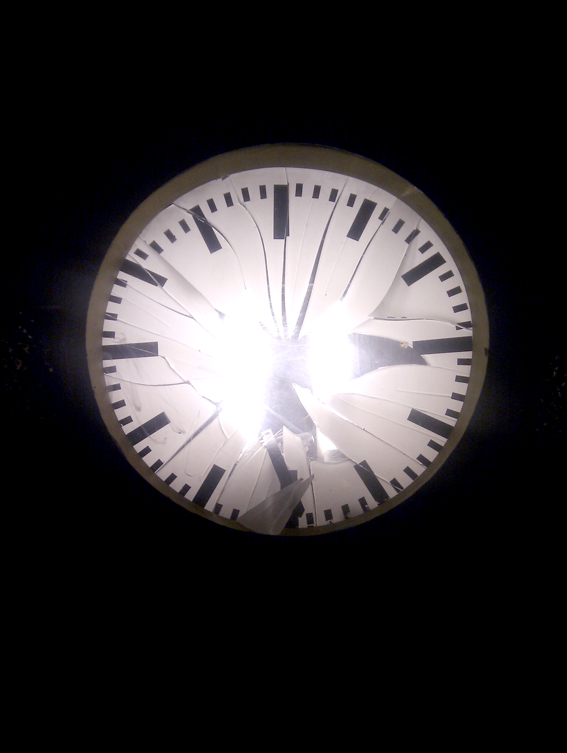

+ + + + + + + + + + + + + + + + + + + + +
2008 - 2011 Postgradual studies Media Art, Academy of Media Arts Cologne (DE)
Diploma (Ute Hörner, Prof. Dr. Georg Trogemann, Dr. Karin Harrasser)
2001-2006 Studies of Fine Arts, Photography, University for Applied Arts, Vienna (AT) Diploma (Gabriele Rothemann)
2003 –04 University of Applied Arts Moholy-Nagy, Budapest (HU)
2000-2001 Studies of Art History/ Hungarian Studies, Humboldt University Berlin (DE)
+ + + + + + + + + + + + + + + + + + + + +
* Cité Internationale des Arts Paris, Artist in Residence,
Austrian Ministry for Arts and Culture, 2008 (AT/F)
* Bellevuesaal, Artist in Residence, Wiesbaden 2007 (DE)
* Art Award Kunsthalle Vienna 2006 (AT)
* Artist in Residence, StadtLand Haus, Rödles, 2006 (DE)
2013
The oracle, FF at The Wand, Berlin (DE)
2012
Set Staged Envisioned, 308at156, New York (US)
About Fungiism, Publication, Pamphlet, with Laura Popplow, Cologne (DE)
Mycophilia, Art Cologne, Cologne (DE)
Happily ever after, Foto-Raum Wien (AT)
2011
Fungifiction, Pixelache, Festival of Electronic Subcultures, Helsinki, (FI)
Fungutopia, by Laura Popplow, DMY International Festival of Design Berlin (DE)
The SpaceShrine, Church of Trinitatis, Cologne (DE)
2010
Heavy Matter, International Symposium of Electronic Arts, Dortmund (DE)
Migrations, .CHB, Berlin (DE)
Haiti Cherie: A Benefit for Haiti, Tape Modern No. 14, Berlin (DE)
2009
Remote Cultures, Mainstation Vilnius (LT)
1989-2009, Museum Of Young Art, Vienna (AT)
Saltibarsciai, Academy of Media Arts Cologne (DE)
2008
Open Studios, Cité des Arts Paris (F)
Balance Beam, Art RMX 01, Cologne (DE)
2007
ticket for a robot, Bellevuesaal, Wiesbaden (solo) (DE)
Wir bitten Dich, verführe uns!, by Carola Schmidt+Nhoah Flug,
Haus am Lützowplatz, Berlin (DE)
2006
That´s a pretty kettle of fish, Kunsthalle project space, Vienna (AT)
F.hunts.U., Galerie im Licht, Vienna (AT)
To lazy for a Revolution?, with Carola Schmidt, StadtLand Haus, Rödles (DE)
the essence, Museum for Applied Arts, Vienna (AT)
Silitubiflex Obscurum, Intervention at the Natural History Museum Vienna (AT)
The Last Trick!, by Carola Schmidt, Galerie Artothek, Vienna (AT)
40x40, UDK Berlin (DE)
2005
Nachtschatten und andere Gewächse, Synagoge Berlin (DE)
the essence, Museum for Applied Arts, Vienna (AT)
Der Levitationshebler, permanent installation at the Technical Museum Vienna (AT)
2004
rien ne vas plus, Heiligenkreutzerhof, Vienna (AT)
Helyi én, Szomszedok, Budapest (HU)
oh tender sailorman, Turboplex, Berlin (DE)
2003
48 h, Galerie König, Vienna (AT)
HEAPS, Book Release with Carola Schmidt, Vienna (AT)